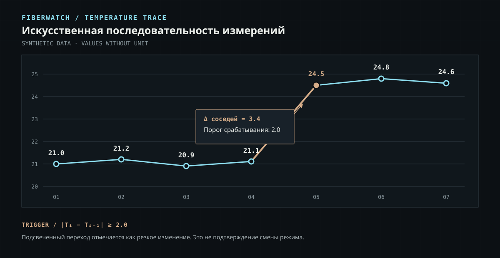
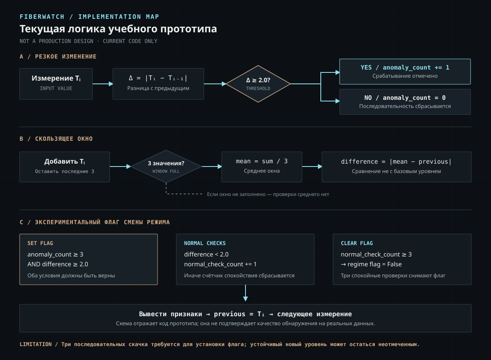

PROJECT CONTEXT
Общая задача
Исследовать подходы к анализу температурных и виброакустических данных и обнаружению потенциально значимых изменений в последовательностях измерений.
Учебный прототип на Python, разработанный в контексте командного FiberWatch. В центре работы — базовое пороговое обнаружение резких изменений и исследование того, почему единичный скачок не равен подтверждённой смене температурного режима.
FiberWatch — командный проект по анализу данных распределённых волоконно-оптических датчиков. Эта страница описывает конкретно мой учебный прототип, а не всю командную систему.
Исследовать подходы к анализу температурных и виброакустических данных и обнаружению потенциально значимых изменений в последовательностях измерений.
На Python я собрал экспериментальную последовательность обработки температуры: сравнение соседних значений, скользящее окно, счётчик аномалий и флаг возможной смены режима.
Алгоритм сочетает локальное сравнение соседних температур с небольшим окном. Эти механизмы дают разные сведения и не должны интерпретироваться как единый критерий готового детектора.
Текущая температура сравнивается с предыдущей. При абсолютной разнице не меньше порога 2.0 значение получает метку аномалии, а счётчик последовательных срабатываний увеличивается.
Окно удерживает последние три значения и рассчитывает среднее. В текущем прототипе оно сравнивается с предыдущим единичным значением — не с отдельно зафиксированным базовым уровнем.
Если скачок уже попал в окно, среднее частично сдвигается вслед за ним. Поэтому значение difference в логике смены режима не обязательно отражает расстояние от прежнего стабильного уровня.
Входной ряд: 21.0, 21.2, 20.9, 21.1, 24.5, 24.8, 24.6. Порог для сравнения соседних значений — 2.0 в единицах входных данных.

График построен по значениям учебного списка. Единицы измерения здесь не указываются; график не представляет реальные показания датчика.
Схема отражает условия из представленного прототипа, включая экспериментальную проверку смены режима. Это не рекомендуемая архитектура следующей версии и не схема всей командной системы.

Разбор именно приведённой в кейсе последовательности позволяет увидеть, какие условия срабатывают, а какие пока не дают ожидаемого поведения.
Переход 21.1 → 24.5 даёт разницу 3.4. При пороге 2.0 условие соседнего сравнения выполняется.
Следующие переходы меньше 2.0 и обнуляют счётчик. Условие флага требует трёх последовательных резких изменений, которых в этом ряду нет.
Сравнение только соседних значений не срабатывает, когда каждый отдельный шаг ниже порога. Скользящее среднее текущей версии эту проблему не решает надёжно.
change = abs(temperature - previous)
anomaly = change >= anomaly_threshold
current_mean = sum(window) / len(window)
difference = abs(current_mean - previous)Первое условие ищет резкую разницу между соседними измерениями. Второе рассчитывает другую величину: расстояние между средним окна (уже содержащего текущую температуру) и предыдущим значением.
Ценность текущего результата — в явной формулировке логики и её ограничений, а не в заявлении о готовности к эксплуатации.
Уточнить отдельную логику обнаружения устойчивого изменения уровня, затем выполнить серию проверок на синтетических рядах. Возможность и правила проверки на реальных данных должны определяться отдельно.